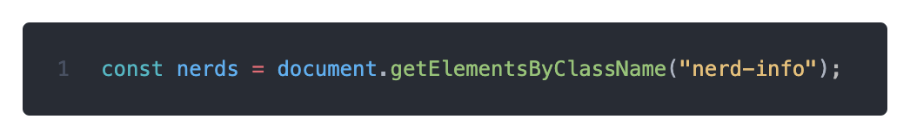
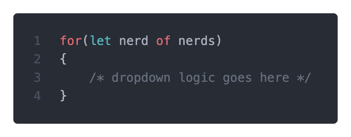
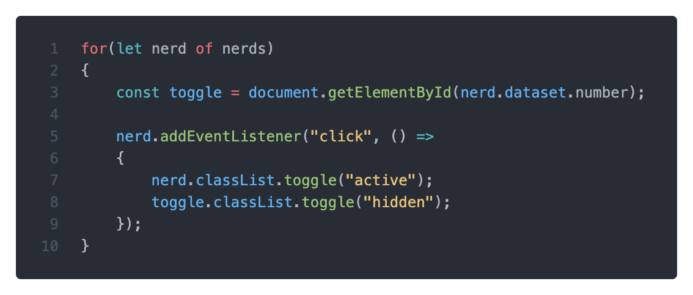
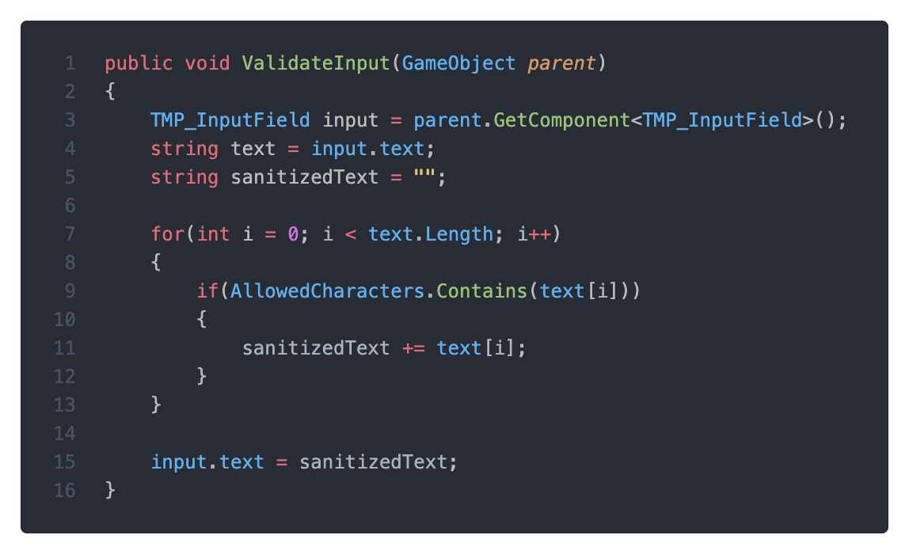
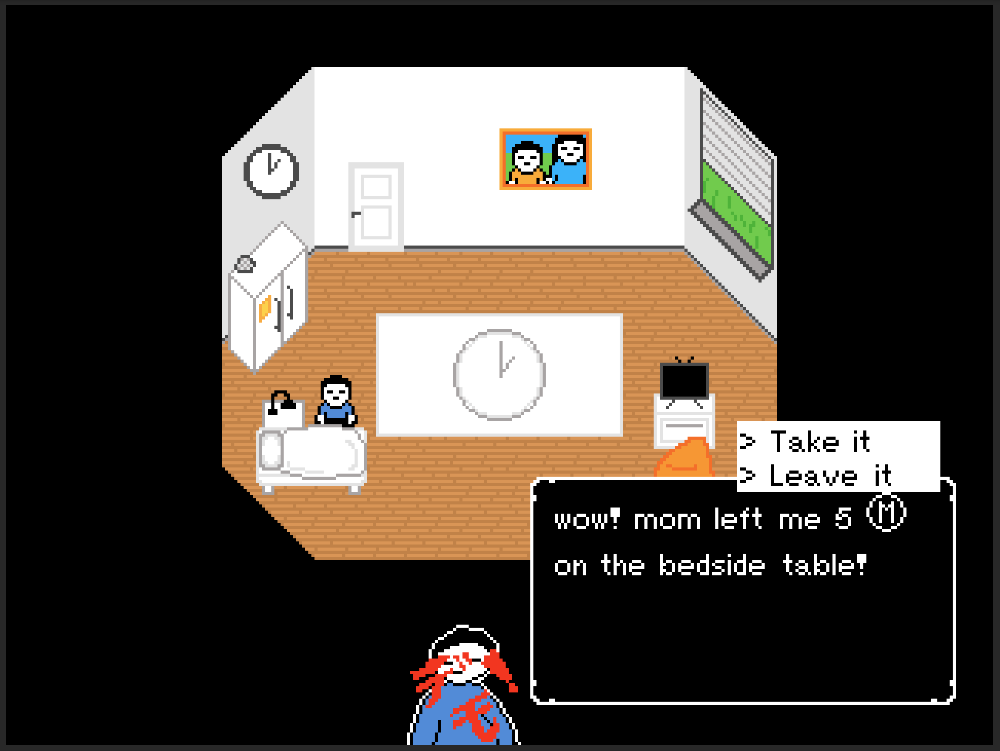
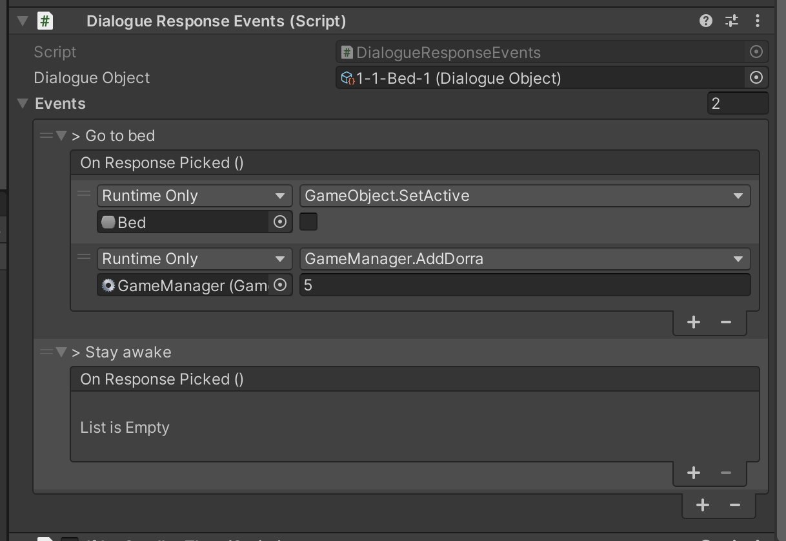

It's been a while, was taking a short break to prevent myself from burning out within the first 3 weeks of starting a new projects, as of ８月２７日 i'm back and writing this newsletter. That out of the way, before going on my little hiatus, I got a fair ammount of progress done.
I now have a schedule for developing this game, from now on I will be going on a half fortnightly schedule, this means that I work and put out 2 newsletter 2 consecutive weeks, and then take a 1 week break (meaning newsletter next week and then a one week break). This should hopefully prevent me from getting burnt out which I felt I was close to doing 3 weeks ago.
I added links to the previous and next newsletters on each page so you can easily view previous publishings, in addition to this you can now view extra, often technical information about the subject in the "Nerd Info" sections, like this (although they will probably never be this in depth again, so enjoy):
Each Nerd Info button has a data-number label which corresponds to the id of the container which contains the nerd info. The actual "Nerd Panel" has one important class by default, "hidden". This will come in to play later.
In the news.js javascript file it then gets all the "Nerd Buttons" by searching after every element with the "nerd-info" class.
Next the code loops through all the buttons that it found so that it can apply the dropdown code to each button.
First the code grabs the value data-number label and tries searching the HTML code for an element that has an id corresponding with the given value, this should be the actual panel that should dropdown.
The code then subscribes to the button's click event, meaning that an inputted function (in this case the dropdown logic) will be called when the button is clicked.
The actual dropdown logic after that is quite simple, it works by toggling two classes on two elements, meaning that if the class is already aplied, it removes it and vice verca.
The classes it toggles are: The "active" class on the button, to turn it yellow indicating that the nerd info is on, and the "hidden" class on the actual dropdown panel, to make it visible (self explanatory enough).
That's all there is to a dropdown, though hopefully this becomes a somewhat built in HTML/CSS feature in the future as it's quite common to have dropdowns on websites.
I threw together a quick main menu so that you can create a new save file and select which chapter you want to go to (after unlocking them), which will play a decently large role in the gameplay later on.
Here's what the current main menu draft looks like, along with the save file create screen:
I wanted to restrict the player's name to the english alphabet (lowercase and uppercase), however Unity didn't seem to have a good system for preventing players from writing ノエル君 so I decided to throw together my own custom script that will sanitize the text for me.
note: AllowedCharacters is a string that contains all the characters that are allowed.
There are probably better ways to implement a Unity input sanitizer, so if you know of any more efficient methods please reach out to me through email or discord.
I knew from the start that I wanted the player to be able to buy and collect items in the game so a currency to be able to purchase items was required, therefore I added "dorras" to the game.
Usually I am one to complain about unity, but I recently discovered something called Unity Events and they are pretty amazing. They allow me to have a script that can call any function from any other GameObject in the scene, without requiring me to hardcode them which leads to 50 different scripts for 50 different cases.
The dialogue system especially utilizes these, when you choose a response from the dialogue I am now able to call a function to give you money, teleport you, change how the room looks or whatever, as long as that function is on a script on a GameObject accessible from the inspector (usually the GameManager GameObject), I can call it.
In Unity it looks like this:

note: ignore the outdated response options, I don't know why Unity won't propagate the changes to the response names
Whats amazing about this is that I can press the little plus button on the On Response Picked () section to add functions that I want to call when the player picks that specific response, in the case of this option, I turn of the GameObject so you can only gain 5 dorra once, and then I call a custom function on the GameManager that adds 5 dorra to the players save file.During this week of development I will be focusing on drawing and composing some music (getting the feeling right is hard). Along with that i might clean up the main menu a little bit and add some more rooms.